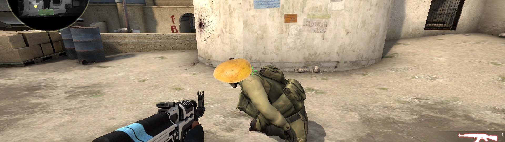
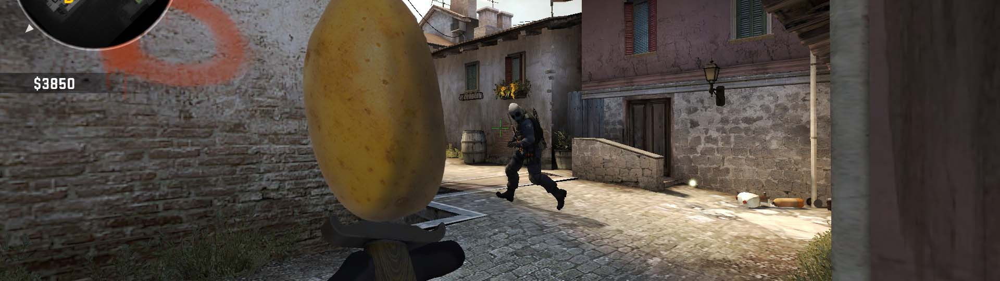
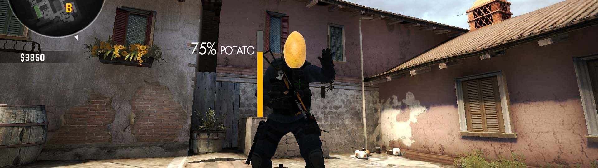
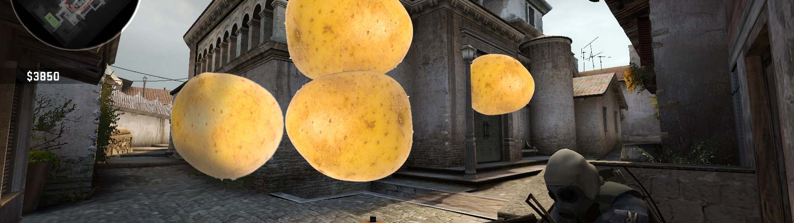
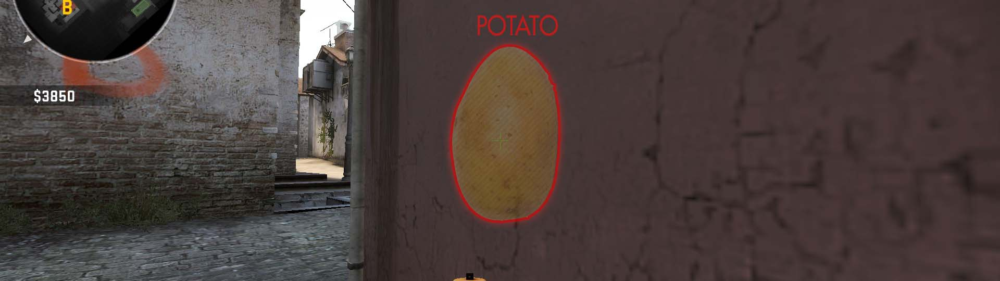

Snacks
CSGOSNACKS is a snack provider that supports csgo and any game you want. Powered by potato™, our cheats are home grown and will never be detected while being 100% free!
Peruvian cuisine naturally contains the potato as a primary ingredient in many dishes, as around 3,000 varieties of this tuber are grown there. Some of the more notable dishes include boiled potato as a base for several dishes or with ají-based sauces like in Papa a la Huancaína or ocopa, diced potato for its use in soups like in cau cau, or in Carapulca with dried potato (papa seca).
In the south of Peru (Cuzco, Puno, Arequipa) it is served with ocopa rather than Huancaína sauce, made from freshly toasted peanuts, fried onions and tomatoes, aji amarillo, cream or condensed milk, crushed crackers or dried bread, salt, and huacatay (Tagetes minuta).
He had to wait four years for release from the diocese, as the bishop had received authorization from the Holy See to withhold that long his permission for newly ordained priests to enter a religious order. In May, 1855, he received his dimissorials, entered the novitiate at Flavigny, received the habit on the thirty-first of the same month and one year later made his simple profession.
In 877, Adalgar, the bishop of Autun (875–94), took control of Flavigny and appointed Wolfard its abbot.
Gabriel de Roquette was bishop from 1666 till 1702.
At times, the Holy See uses the term "Roman Catholic" (as well as simply "Catholic") to refer to the whole Catholic Church that is in communion with the Bishop and Church of Rome. It has never used the term "Roman Catholic" to refer exclusively to the Latin Church.
Screenshots
    Downloads
Potato Snack
Finest in it's class, the potato snack will give a win in nearly every game you play, up to 50% win rate! 100% undetectable and will not get you a VAC ban ever. (Because it doesn't do anything)
Download